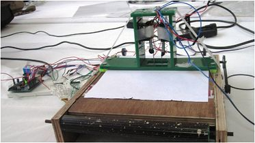
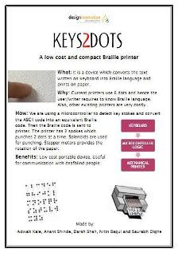

Electronics freak, hardware tinkerer, movie buff, android lover and blogger
Keys2Dots: An innovative Braille Printer
MIT-CoEP Design Innovation Workshop 2011 was held at CoEP, Pune
The workshop was spread over 5 days with the activities including field trip, brainstorming session, prototype designing and finally an exhibition to showcase our ideas. More info: MIT-CoEP Desgin Innovation Workshop website
Our instructors were Ken Endo and Nadya Peek from MIT Media Labs, Prof. Dhananjay Gadre from NSIT and Vinayak from Fab Lab Vigyan Ashram.
We made a working prototype of a stand-alone printer cum typewrite system. This system took input from USB keyboard and gave the input to the microcontroller. The microcontroller detected key stokes and converted the ASCII code into an equivalent Braille code. Then the Braille code was sent to printer with the help of relays. The printer had 2 spokes which punched 2 dots at a time. Solenoids were used for punching. Stepper motors provided the rotation of the paper. The current model worked on AC source. Arduino was used as a microcontroller and the relays were taken from the door bell.
Some of the beneficiaries of this solution are teachers who want to make course notes in Braille for visually impaired students or publication houses willing to print some books in Braille. This will also help to teach more number of visually impaired students which will ultimately help them to be independent.
Media coverage: The Hindu
